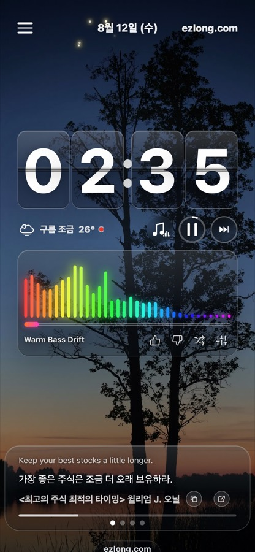
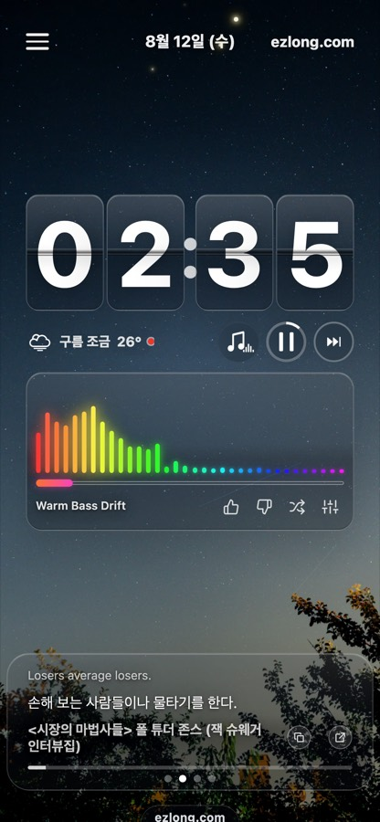
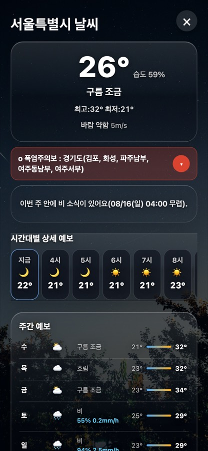
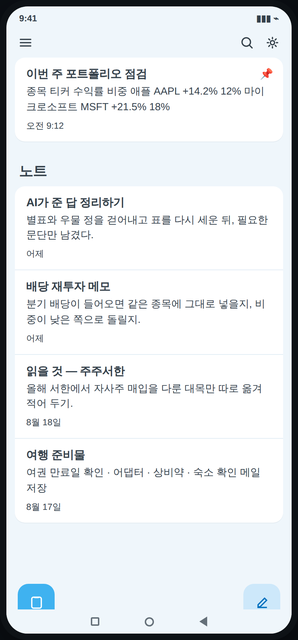
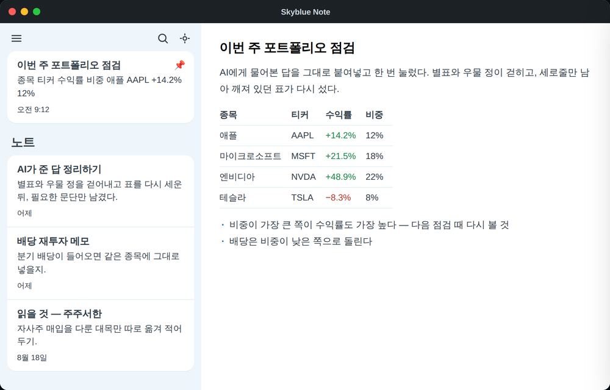
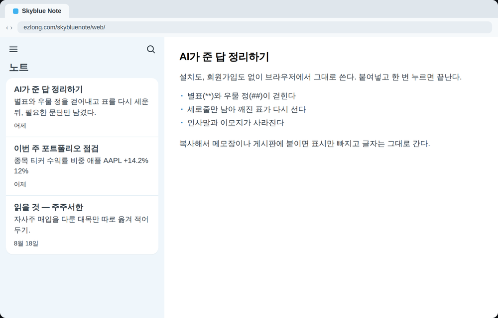

시계 · 스탠바이
Long Time, Easy Life
충전기에 꽂아 가로로 세워두면 큼직한 플립시계가 뜨고, 계절과 날씨와 시간에 맞춰 배경 사진과 영상이 저절로 바뀝니다. 지금 날씨와 시간별·주간 예보를 그 자리에서 보고, 아래로는 투자 거장들의 문장이 흘러가고, 일하거나 공부할 때 듣기 좋은 음악도 함께 깔립니다.




시계 · 스탠바이
충전기에 꽂아 가로로 세워두면 큼직한 플립시계가 뜨고, 계절과 날씨와 시간에 맞춰 배경 사진과 영상이 저절로 바뀝니다. 지금 날씨와 시간별·주간 예보를 그 자리에서 보고, 아래로는 투자 거장들의 문장이 흘러가고, 일하거나 공부할 때 듣기 좋은 음악도 함께 깔립니다.



노트 · 메모
ChatGPT·클로드·그록이 준 답을 붙여넣고 한 번 누르면 마크다운 별표와 우물 정이 걷히고 깨진 표가 다시 서 엑셀로 바로 복사됩니다. 화면에서는 제목과 굵게가 그대로 보이고, 복사해서 메모장이나 게시판에 붙이면 표시만 빠집니다.




